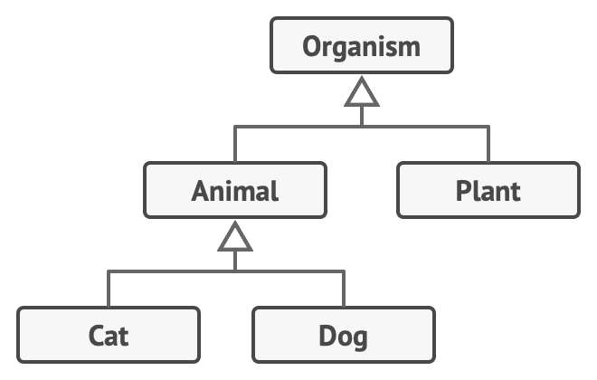
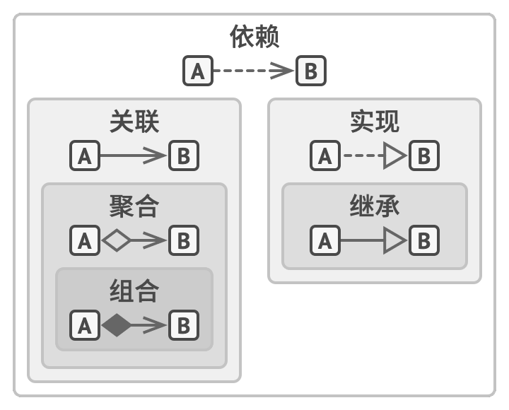

7.1.面向对象程序设计基础
面向对象程序设计（Object-Oriented Programming，缩写为 OOP）是一种范式，其基本理念是将数据块及与数据相关的行为封装成为特殊的、名为对象的实体， 同时对象实体的生成基于类。
类层次结构
一些类可能会组织起来形成类层次结构。

面向对象的四个核心概念
面向对象程序设计的四个基本概念使其区别于其他程序设计范式。
这四个概念的介绍可以参考《4.1.类》。
对象之间的关系
依赖
依赖是类之间最基础的、 也是最微弱的关系类型。 如果修改一个类的定义可能会造成另一个类的变化，那么这两个类之间就存在依赖关系。
当你在代码中使用具体类的名称时， 通常意味着存在依赖关系。通过让代码依赖接口或抽象类 （而不是具体类）， 你可以降低其依赖程度。
关联
关联是一个对象使用另一对象或与另一对象进行交互的关系。关联可以是单向的，也可以是双向的。
关联可视为一种特殊类型的依赖， 即一个对象总是拥有访问与其交互的对象的权限， 而简单的依赖关系并不会在对象间建立永久性的联系。
一般来说， 你可以使用关联关系来表示类似于类成员变量的东西。 这个关系将一直存在， 因此你总能通过 “订单” 来获取其 “顾客”。 但是它并非一定是成员变量。 如果你根据接口来创建类， 它也可以表示为一个可返回 “订单” 的 “顾客” 的方法。
关联 VS 依赖
class Professor:
student = Student()
def teach(c:Course):
student.remember(c.getKnowledge())
teach （教授知识）方法接收一个来自Course类的参数。 如果有人修改了Course类的get-Knowledge （获取知识）方法 （修改方法名或添加一些必须的参数等）， 代码将会崩溃。 这就是依赖关系。
现在， 让我们来看看名为 student 的成员变量， 以及如何在 teach方法中使用该变量。 我们可以肯定 Student 类是 教授类的依赖： 如果 remember （记住） 方法被修改， 教授的代码也将崩溃。 但==由于教授的所有方法总能访问student成员变量， 所以 学生类就不仅是依赖， 而也是关联了。==
聚合
聚合是一种特殊类型的关联， 用于表示多个对象之间的 “一对多”、 “多对多” 或 “整体对部分” 的关系。 普通关联仅用于描述两个对象之间的关系。
通常在聚合关系中， 一个对象 “拥有” 一组其他对象， 并扮演着容器或集合的角色。 组件可以独立于容器存在， 也可以同时连接多个容器。 在 UML 图中， 聚合关系使用一端是空心菱形， 另一端指向组件的箭头来表示。
组合
组合是一种特殊类型的聚合， 其中一个对象由一个或多个其他对象实例构成。 组合与聚合的区别在于组件仅能作为容器的一部分存在，容器销毁时，组件也会被销毁。
具体来说，教授可以同时是金融院系和数学院系的教授，但是院系一般不会同时是多个大学的院系。
在 UML 图中， 组合与聚合关系的符号相同， 但箭头起始处的菱形是实心的。
总结

- 依赖： 对类 B 进行修改会影响到类 A 。
- 关联： 对象 A 知道对象 B。 类 A 依赖于类 B。
- 聚合： 对象 A 知道对象 B 且由 B 构成。 类 A 依赖于类 B。
- 组合： 对象 A 知道对象 B、 由 B 构成而且管理着 B 的生命周期。 类 A 依赖于类 B。
- 实现： 类 A 定义的方法由接口 B 声明。 对象 A 可被视为对象 B。 类 A 依赖于类 B。
- 继承： 类 A 继承类 B 的接口和实现， 但是可以对其进行扩展。 对象 A 可被视为对象 B。 类 A 依赖于类 B。